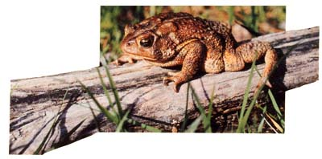

Is your garden plagued with 50 kinds of bugs? Then you need amphibian insect control!
The dog may be "man's best friend" . but if that person is a gardener, his or her most treasured ally is likely to be the humble toad! Warty-skinned, dumpy, and lethargic, the jewel-eyed toad is a prodigious consumer of just about anything that moves and will fit in its mouth. Although most of its prey falls into the category we label "pests" (toads love cutworms!), some of the toad's diet does consist of such beneficial creatures as bees, ladybugs, and lacewings. This is unfortunate, but it's surely forgivable for a little animal that can snap up nearly 100 insects every single night . . . a total of nearly 10,000 bugs over a three month growing season! Beetles of every description, caterpillars, flies, larvae, moths, and wireworms are all fair game for this insectivore. (It likes slugs and snails, too.) The amount that an individual toad may consume in a single feeding is astonishing. One toad was observed to eat 86 houseflies . . . another ate 65 gypsy moth larvae . . . while still another swallowed 37 adult tent caterpillars!
It's pretty obvious, then, that a biological bug control of such talent and efficiency should not be ignored. Indeed, the savvy modern gardener would do well to cultivate this little amphibian's acquaintance.
Eighteen species of true toads live in this country, with at least a few kinds to be found in every state in the union (yes, even in Alaska!). They're particularly abundant in the eastern and Gulf states and the Mississippi Valley region . . . but in truth, they fill many different environmental niches and can be found in every sort of habitat from high mountains to rain forests to coastal plains to deserts.
Although similar, toads and frogs are easily distinguished. Mature toads are dry, bumpy skinned, brownish, plump, deliberate in their movements, and look rather pompous. They hop-slowly-and may puff themselves up to discourage unwelcome attention. Frogs, on the other hand, are moist and smooth-skinned, greenish, slender, a bit dandified in appearance, and alert. They leap-often with a total disregard for the consequences-and usually try to escape rather than bluff would-be captors.
If your garden needs a toad patrol, it's easy (during the appropriate season) to transplant eggs, tadpoles, toad lets, or adults from their native habitats to your yard. Of course, mature toads can be caught during any warm month . . . beginning along about March or April. Then you're likely to hear the evening chorus of long, high-pitched trills or discordant nasal croaks signaling that hoppers-such as the adult American toad (Bufo americanus) or Fowler's toad (Bufo woodlouse fowleri), two of the most common species in the United States-have left their winter burrows and are congregating around water to find. mates. You can track down these mature specimens with a flashlight (they rarely run from the beam), quietly following their voices until you 1ocate them. They can then be apprehended with a net, a bucket, a bag, a box, or even your bare hands . . . but be forewarned! When you grab a toad, it may chirp, shriek, urinate, and/or exude a gooey, caustic fluid from the glands behind its "eye bulges". It may also appear to play dead, although many scientists think the creatures aren't faking but are actually frightened into unconsciousness. None of these natural defenses will harm you, but you should wash your hands promptly and thoroughly afterward, as the glandular secretion can irritate mucous membranes such as those in the mouth or eyes. (The goo won't cause warts!)
Eggs are laid in shallow water that is slow moving or still. They're deposited in long, coiling tubes of jelly, each of which contains a single row of small, black ova. (Frog eggs are also black, but are laid in clusters, with each embryo encased in its own round capsule of jelly.) Carefully scoop the fragile tubes into a bucket . . . along with some of the surrounding water, a few algae-covered stones or some green pond scum, and bits of water plants for the tadpoles to eat when they emerge in 3 to 12 days.
If you can't find any eggs, look for tadpoles. Toad tads are small, very dark brown or black, and may have minute gold stipples on their oval, short-tailed bodies. At this stage, toads can best be distinguished from frogs by color: Most frog tadpoles are not black. Capture the little wrigglers just as you would the eggs.
To hold down the mortality rate, don't crowd your catch: No more than a dozen should be kept in a one- to two-gallon container. A spare string of eggs in a separate jar can be used to replace any eggs that die or become diseased (if they turn white, they should be removed at once). Because the eggs and tadpoles are susceptible to overheating, be sure never to leave them in direct sunlight for an entire day. In addition, every week or so, place a few more algae-covered rocks and bits of waterweed in the toad nursery for food. And keep an eye on the water level . . . as the liquid evaporates, replace it with more pond water.
In SO to 65 days-usually around late June or July-the babies will develop into tiny toadlets that look like smooth-skinned miniature adults. The youngsters crawl onto land and hide in nearby vegetation for a few days. Then, with the first rain shower or cloudy, humid day, they migrate-sometimes in droves!-to the fields and gardens. Those animals that survive grow quickly, shedding their skins every few weeks . .. and reach adult size in about a year.
Once on land, toads require a cool, damp place to live. Unless you have an unusually wet plot, you'll need to add a small pond of sorts so that your garden guardian will be healthy and contented. An old dishpan buried to the rim will serve quite well when filled with water and given several fist-sized rocks that protrude above the surface. Toads are territorial and are loners by nature, so if you want more than one hopper in your garden you should set up several small, scattered puddles rather than one large pool. Beyond that, you'll need some good-sized rocks, broken flowerpots, or a length of log next to each little pond to provide shade and an attractive place for the animal to burrow.
Toads usually live in a small area and return to a favorite spot each evening to feed. It may come as a surprise to you that they are the most intelligent of the amphibians, but it's true: They can be taught to come out of hiding when called and to accept food from humans. In fact, if feeding is done on a regular schedule, many toads even anticipate their dinner! (They eat only moving prey, so proffered delicacies should be waved in front of them on the end of a twig.) Furthermore, the bug hunters respond to the "soft touch". Once accustomed to gentle handling, a toad will settle serenely in your opened palm, often stretching out one hind leg at a time to have it stroked and scratched.
Although eggs and tadpoles require a bit of nurturing, adult toads need only to have their ponds refilled during dry spells. In return, they will provide the gardener with many years of faithful service in biological insect control and the pleasure of animal companionship. No one's yet determined the toad's life expectancy in the wild, but these little amphibians have been known to live in captivity for more than 30 years. With so much offered for so little effort, don't wait to get a toad for your garden: Hop to it!:
|
 |
|
|